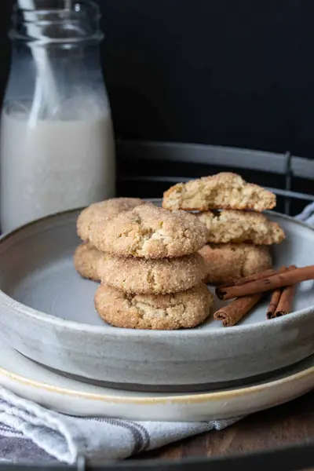

Vegan Gluten-Free Snickerdoodles

Ingredients
- 1 ¼ cups fine ground almond flour
- ¼ cup oat flour (, gluten-free if needed)
- ½ cup cane sugar (, see note)
- 1 ½ teaspoons cream of tartar
- ½ teaspoon baking soda
- ½ teaspoon sea salt
- 5 tablespoons apple sauce
- 2 teaspoons vanilla extract
- 2 tablespoons cane sugar
- 1 ½ teaspoons cinnamon (, see note)
Steps
- Preheat oven to 350 F/ 175 C.
- Put flours, sugar, cream of tartar, baking soda, and salt in a bowl. Whisk well to remove clumps and combine.
- Make a well in the middle and add apple sauce and vanilla.
- Stir to get everything mixed well.
- Mix coating ingredients in a separate bowl.
- Form dough into balls and roll in sugar mixture. It will be a touch sticky but goes away once you roll them.
- Put on a parchment lined cookie sheet.
- Bake for 11-12 minutes. They will seem a little under baked but they cook more as they cool, so if you overbake they will not be as airy and soft. You want them just beginning to golden at the edges.
- Serve!
Recipe by Anjali Shah, from The Picky Eater. Saved here for personal use; the original has the full notes, tips and photos. Open original